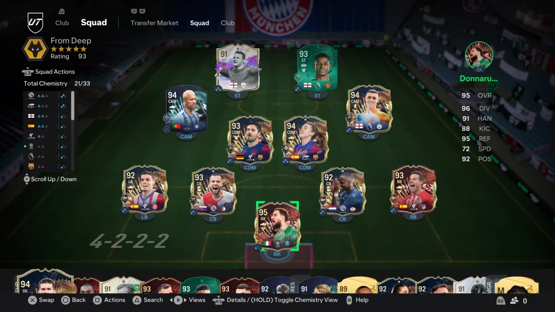
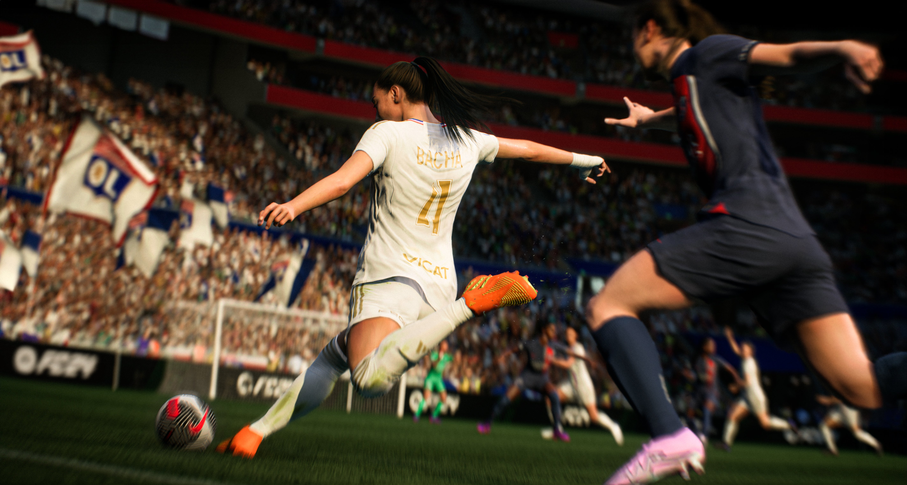
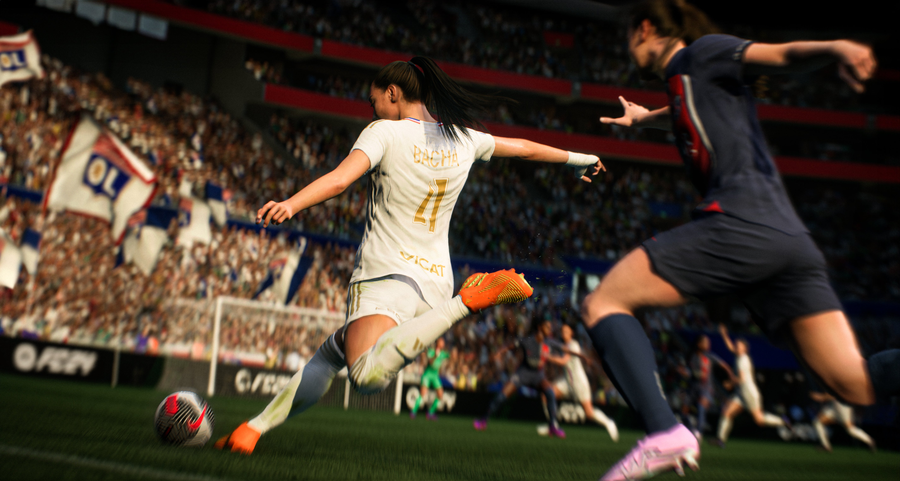
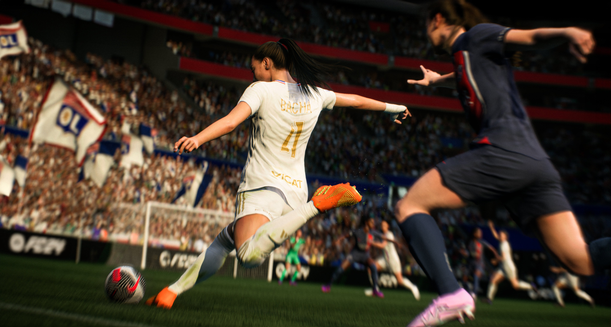
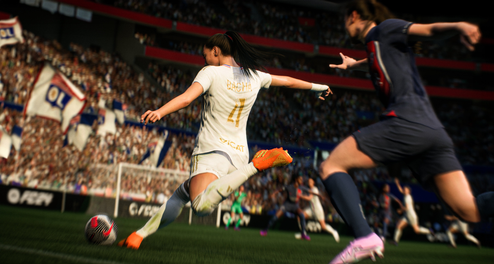

Game Screenshots

 


EA Sports FC 24, or EAFC 24, ushers in a new era for football gaming with several key innovations. HyperMotion V technology enhances player movements with real match data for greater realism. The new PlayStyles and PlayStyles+ features give players unique abilities based on their real-life traits. Ultimate Team introduces Evolutions, allowing players to upgrade cards over time, and now includes women’s football, enabling mixed-gender squads. Career Mode has been revamped with more tactical depth, including training plans and a cinematic Dynamic Moments feature. Cross-play has been expanded to more modes, including Pro Clubs and VOLTA, and the game’s visuals are improved with the Frostbite Engine. EAFC 24 combines these advancements to offer a fresh and immersive football experience
Playing EA Sports FC 24 was a genuinely immersive and exciting experience, one that felt both familiar in its roots and refreshingly innovative. From the first kickoff, the difference in gameplay was noticeable, particularly with the new HyperMotion V technology. Player animations were remarkably smooth, as if they were directly taken from real-life matches. The way players reacted, dribbled, and positioned themselves was more fluid than ever before, giving the matches an authentic feel. I could see a distinct improvement in how teams moved collectively, not just as individuals, making tactics and strategy feel more realistic and responsive. One of my favorite parts of the game was diving into Career Mode. The enhanced Player Development System brought a whole new level of depth to managing a team. I spent hours crafting individualized training plans for my players, focusing on developing their specific skills, like improving a striker's finishing or a midfielder's stamina. The system made me feel like I was building my team from the ground up, nurturing young talent into world-class players. Every transfer, match, and training session felt like it had real consequences, adding a level of excitement and engagement I hadn’t experienced in previous games. When I switched over to Ultimate Team, I was pleased to see that EA Sports had made some important changes that added more flexibility. The new chemistry system made it easier to mix and match players from different leagues and nations, giving me more freedom in building my dream team. I was also excited to experiment with female players for the first time in Ultimate Team. Including women’s football added a fresh dynamic, and the gameplay for female teams was just as smooth and competitive as for the men’s teams. It was a great step forward for representation in the game, and it felt like a natural part of the evolution of the franchise. The visual improvements were also hard to miss. EA Sports FC 24 took the already impressive graphics of the series to another level. The stadiums felt more alive, with dynamic weather effects that changed the course of a match—rain-soaked pitches became slippery and made controlling the ball more challenging, while sunny days made for faster-paced games. The crowd animations were detailed and responsive, making it feel like a real football atmosphere. I even noticed small touches like fans waving flags or reacting to close calls on the pitch, which added to the overall immersion. I also had a lot of fun playing Volta Football, which offers a more casual, street-style football experience. The fast-paced action, along with smaller teams and flashy skills, made for quick, adrenaline-filled matches. It was a nice break from the intense 11v11 games and brought back memories of playing street football as a kid. Volta’s customization options also allowed me to create a unique team that reflected my personality, from their kits to their celebration styles. As I ventured into online play, the matchmaking system seemed smoother than in previous versions, and I found myself competing in intense, evenly matched games. The improvements in AI made even offline matches more challenging and engaging, as the opposing teams adapted to my tactics more intelligently. The way they defended against my attacks or countered with quick breaks was more sophisticated, making every match a true test of strategy. Overall, EA Sports FC 24 is a fantastic evolution of the football gaming experience. It strikes the perfect balance between honoring the legacy of the FIFA series and pushing the boundaries with new technology and features. The gameplay feels more refined, the graphics are stunning, and the variety of modes ensures there’s something for every type of player. Whether you’re a die-hard fan of Career Mode, obsessed with building the perfect Ultimate Team, or just looking to kick around with friends in Volta, EAFC 24 delivers an engaging and enjoyable experience at every level. It’s easily one of the most enjoyable football games I’ve played in years, and I can’t wait to dive back in for more.
